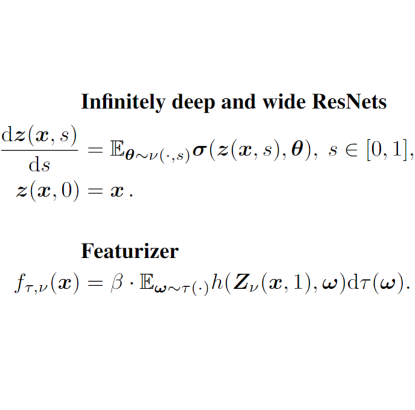
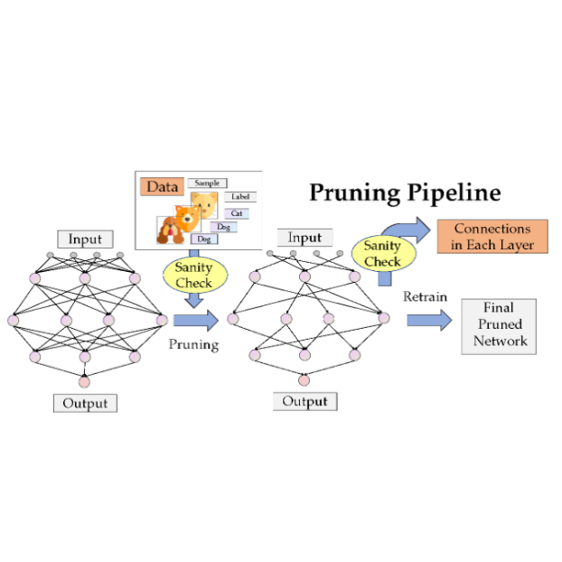

|
Yihang Chen (陈奕行) I received the M.S. degree from the School of Computer and Communication Sciences at EPFL in February 2024, advised by Prof. Volkan Cevher; and the B.S. degree from the School of Mathematical Sciences at Peking University in July 2021, advised by Prof. Liwei Wang. |

|
ResearchI have a broad interest in deep learning theory and generative models. At present, my research mainly focus on:
|
Publications* indicates equal contribution |

|
Order-Preserving GFlowNets
Yihang Chen, Lukas Mauch International Conference on Learning Representations (ICLR), 2024 [code] / [slide] We propose Order-Preserving GFlowNets (OP-GFNs), which sample composite objects given only the (partial) order, instead of the reward function.
|
|

|
Generalization of
Deep ResNets in the Mean-Field Regime
Yihang Chen, Fanghui Liu, Yiping Lu, Grigorios Chrysos, Volkan Cevher International Conference on Learning Representations (ICLR), Spotlight , 2024 [slide] We provide the upper bound of the parameter distribution moving and generalization error on the 0-1 classification task of the infinitely deep and wide ResNets. |
|

|
Sanity-Checking Pruning Methods: Random Tickets can Win
the Jackpot
Jingtong Su*, Yihang Chen*, Tianle Cai*, Tianhao Wu, Ruiqi Gao, Liwei Wang, Jason D. Lee. 34th Annual Conference on Neural Information Processing Systems (NeurIPS), 2020 [code] / [slide] We sanity-check prune-at-init methods, and find them hardly exploits any information from the training data. We also propose "zero-shot" pruning, which only relies on simple data-independent pruning ratios for each layer. |
Miscellanea |
Invited Talks |
Mila GFlowNet meeting, Order-Preserving GFlowNets, 2023.10.04. |
Honors and Awards |
Research Scholars MSc Program, EPFL, 2021-2022.
Excellent Graduate of Peking University, 2021. National Scholarship, Ministry of Education of the People's Republic of China (Top 1%), 2020. Shing Tung Yau Mathematics Awards, Chia Chiao Lin Medals, Bronze, 2020. Exceptional Award for Academic Innovation, Peking University, 2020. The Elite Undergraduate Training Program of Applied Math, 2019-2021. |
|
Last Modified: February 20th, 2024. Website template from Jon Barron. |